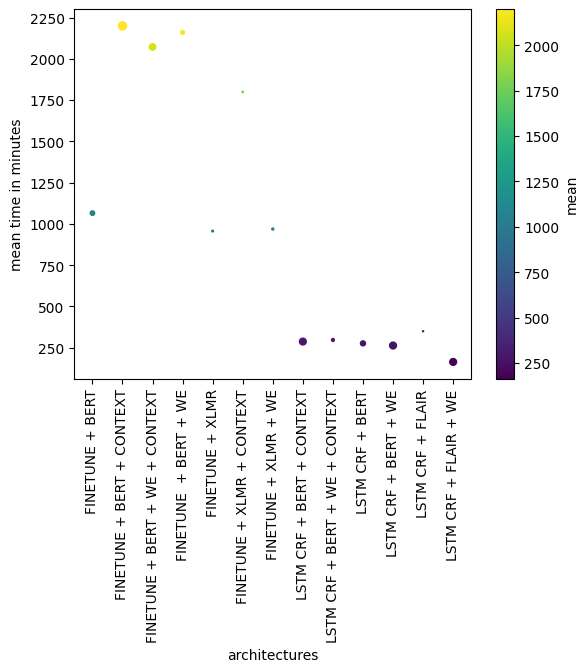

Appendix data
Contents
Appendix data#
In this notebook we generate some figures that will be use in the appendix of the documentation.
Models parameters#
Obtain the number of parameters in each of the trained models.
from pathlib import Path
from flair.models.sequence_tagger_model import SequenceTagger
from myst_nb import glue
import pandas as pd
import torch
def get_parameter_num(model_path: Path) -> int:
"""Obtain the number of parameter in a model
Args:
model_path (Path): Path to a SequenceTagger model
Returns:
int: Number of parameters of the model
"""
model = SequenceTagger.load(model_path)
parameters = model.parameters()
return sum(map(torch.numel, parameters))
def make_pretty(styler):
styler.background_gradient(axis=None, cmap="YlGnBu")
styler.set_table_styles([
{'selector': 'th.col_heading.level0', 'props': 'text-align: center; font-size: 1.5em;'},
{"selector": "", "props": [("border", "1px solid grey")]},
{"selector": "tbody td", "props": [("border", "1px solid grey")]},
{"selector": "th", "props": [("border", "1px solid grey")]},
], overwrite=False)
styler.format( "{:.0f}",)
return styler
mdpths = {
("FINETUNE", "XLMR + WE"): "GuiGel/xlm-roberta-large-flert-we-finetune-meddocan",
("FINETUNE", "XLMR"): "GuiGel/xlm-roberta-large-flert-finetune-meddocan",
("FINETUNE", "BETO + WE"): "GuiGel/beto-uncased-flert-context-we-finetune-meddocan",
("FINETUNE", "BETO"): "GuiGel/beto-uncased-flert-finetune-meddocan",
("LSTM CRF", "BETO"): "GuiGel/beto-uncased-flert-lstm-crf-meddocan",
("LSTM CRF", "BETO + WE"): "GuiGel/beto-uncased-flert-context-we-lstm-crf-meddocan",
("LSTM CRF", "FLAIR"): "GuiGel/meddocan-flair-lstm-crf",
("LSTM CRF", "FLAIR + WE"): "GuiGel/meddocan-flair-we-lstm-crf",
}
model_parameters_num = {k: get_parameter_num(v) for k, v in mdpths.items()}
df = (pd.DataFrame(model_parameters_num, index=["Numero de parámetros en Million"], dtype=int) / 1e6)
style = df.style.pipe(make_pretty)
glue("model_parameters", style)
/home/wave/Project/MedDocAn/.venv/lib/python3.8/site-packages/huggingface_hub/file_download.py:588: FutureWarning: `cached_download` is the legacy way to download files from the HF hub, please consider upgrading to `hf_hub_download`
warnings.warn(
2022-11-08 09:13:13,698 loading file /home/wave/.flair/models/xlm-roberta-large-flert-we-finetune-meddocan/2a53a33b18b20d080ad6926a1a765a0b5079de8c030f926a26212b348c620696.b2f6c0d8afd983956bf133bd0989ddd27717365de5e45f2f7839b304d144c1cd
2022-11-08 09:13:27,659 SequenceTagger predicts: Dictionary with 89 tags: O, S-TERRITORIO, B-TERRITORIO, E-TERRITORIO, I-TERRITORIO, S-FECHAS, B-FECHAS, E-FECHAS, I-FECHAS, S-EDAD_SUJETO_ASISTENCIA, B-EDAD_SUJETO_ASISTENCIA, E-EDAD_SUJETO_ASISTENCIA, I-EDAD_SUJETO_ASISTENCIA, S-NOMBRE_SUJETO_ASISTENCIA, B-NOMBRE_SUJETO_ASISTENCIA, E-NOMBRE_SUJETO_ASISTENCIA, I-NOMBRE_SUJETO_ASISTENCIA, S-NOMBRE_PERSONAL_SANITARIO, B-NOMBRE_PERSONAL_SANITARIO, E-NOMBRE_PERSONAL_SANITARIO, I-NOMBRE_PERSONAL_SANITARIO, S-SEXO_SUJETO_ASISTENCIA, B-SEXO_SUJETO_ASISTENCIA, E-SEXO_SUJETO_ASISTENCIA, I-SEXO_SUJETO_ASISTENCIA, S-CALLE, B-CALLE, E-CALLE, I-CALLE, S-PAIS, B-PAIS, E-PAIS, I-PAIS, S-ID_SUJETO_ASISTENCIA, B-ID_SUJETO_ASISTENCIA, E-ID_SUJETO_ASISTENCIA, I-ID_SUJETO_ASISTENCIA, S-ID_TITULACION_PERSONAL_SANITARIO, B-ID_TITULACION_PERSONAL_SANITARIO, E-ID_TITULACION_PERSONAL_SANITARIO, I-ID_TITULACION_PERSONAL_SANITARIO, S-CORREO_ELECTRONICO, B-CORREO_ELECTRONICO, E-CORREO_ELECTRONICO, I-CORREO_ELECTRONICO, S-ID_ASEGURAMIENTO, B-ID_ASEGURAMIENTO, E-ID_ASEGURAMIENTO, I-ID_ASEGURAMIENTO, S-HOSPITAL
/home/wave/Project/MedDocAn/.venv/lib/python3.8/site-packages/huggingface_hub/file_download.py:588: FutureWarning: `cached_download` is the legacy way to download files from the HF hub, please consider upgrading to `hf_hub_download`
warnings.warn(
2022-11-08 09:13:29,050 loading file /home/wave/.flair/models/xlm-roberta-large-flert-finetune-meddocan/b1674a6bf22cef0c404f0aa335a006b3d4cdc82e4dfde2f19bcc066fad6d1ac2.8f25ebdb42f4301a27d82810033ac8cbb76a3a44bd6b47b5a131e13328e847bb
2022-11-08 09:13:38,736 SequenceTagger predicts: Dictionary with 89 tags: O, S-TERRITORIO, B-TERRITORIO, E-TERRITORIO, I-TERRITORIO, S-FECHAS, B-FECHAS, E-FECHAS, I-FECHAS, S-EDAD_SUJETO_ASISTENCIA, B-EDAD_SUJETO_ASISTENCIA, E-EDAD_SUJETO_ASISTENCIA, I-EDAD_SUJETO_ASISTENCIA, S-NOMBRE_SUJETO_ASISTENCIA, B-NOMBRE_SUJETO_ASISTENCIA, E-NOMBRE_SUJETO_ASISTENCIA, I-NOMBRE_SUJETO_ASISTENCIA, S-NOMBRE_PERSONAL_SANITARIO, B-NOMBRE_PERSONAL_SANITARIO, E-NOMBRE_PERSONAL_SANITARIO, I-NOMBRE_PERSONAL_SANITARIO, S-SEXO_SUJETO_ASISTENCIA, B-SEXO_SUJETO_ASISTENCIA, E-SEXO_SUJETO_ASISTENCIA, I-SEXO_SUJETO_ASISTENCIA, S-CALLE, B-CALLE, E-CALLE, I-CALLE, S-PAIS, B-PAIS, E-PAIS, I-PAIS, S-ID_SUJETO_ASISTENCIA, B-ID_SUJETO_ASISTENCIA, E-ID_SUJETO_ASISTENCIA, I-ID_SUJETO_ASISTENCIA, S-ID_TITULACION_PERSONAL_SANITARIO, B-ID_TITULACION_PERSONAL_SANITARIO, E-ID_TITULACION_PERSONAL_SANITARIO, I-ID_TITULACION_PERSONAL_SANITARIO, S-CORREO_ELECTRONICO, B-CORREO_ELECTRONICO, E-CORREO_ELECTRONICO, I-CORREO_ELECTRONICO, S-ID_ASEGURAMIENTO, B-ID_ASEGURAMIENTO, E-ID_ASEGURAMIENTO, I-ID_ASEGURAMIENTO, S-HOSPITAL
/home/wave/Project/MedDocAn/.venv/lib/python3.8/site-packages/huggingface_hub/file_download.py:588: FutureWarning: `cached_download` is the legacy way to download files from the HF hub, please consider upgrading to `hf_hub_download`
warnings.warn(
2022-11-08 09:13:39,821 loading file /home/wave/.flair/models/beto-uncased-flert-context-we-finetune-meddocan/4719129504bdd7428aa1bbcd545dca8121c200b80760302212e31fa587184963.f5e59686d012a1ad06d977552b3ed034d4a6dd188efd12fbdc4b6248e5062793
2022-11-08 09:13:43,252 SequenceTagger predicts: Dictionary with 89 tags: O, S-TERRITORIO, B-TERRITORIO, E-TERRITORIO, I-TERRITORIO, S-FECHAS, B-FECHAS, E-FECHAS, I-FECHAS, S-EDAD_SUJETO_ASISTENCIA, B-EDAD_SUJETO_ASISTENCIA, E-EDAD_SUJETO_ASISTENCIA, I-EDAD_SUJETO_ASISTENCIA, S-NOMBRE_SUJETO_ASISTENCIA, B-NOMBRE_SUJETO_ASISTENCIA, E-NOMBRE_SUJETO_ASISTENCIA, I-NOMBRE_SUJETO_ASISTENCIA, S-NOMBRE_PERSONAL_SANITARIO, B-NOMBRE_PERSONAL_SANITARIO, E-NOMBRE_PERSONAL_SANITARIO, I-NOMBRE_PERSONAL_SANITARIO, S-SEXO_SUJETO_ASISTENCIA, B-SEXO_SUJETO_ASISTENCIA, E-SEXO_SUJETO_ASISTENCIA, I-SEXO_SUJETO_ASISTENCIA, S-CALLE, B-CALLE, E-CALLE, I-CALLE, S-PAIS, B-PAIS, E-PAIS, I-PAIS, S-ID_SUJETO_ASISTENCIA, B-ID_SUJETO_ASISTENCIA, E-ID_SUJETO_ASISTENCIA, I-ID_SUJETO_ASISTENCIA, S-ID_TITULACION_PERSONAL_SANITARIO, B-ID_TITULACION_PERSONAL_SANITARIO, E-ID_TITULACION_PERSONAL_SANITARIO, I-ID_TITULACION_PERSONAL_SANITARIO, S-CORREO_ELECTRONICO, B-CORREO_ELECTRONICO, E-CORREO_ELECTRONICO, I-CORREO_ELECTRONICO, S-ID_ASEGURAMIENTO, B-ID_ASEGURAMIENTO, E-ID_ASEGURAMIENTO, I-ID_ASEGURAMIENTO, S-HOSPITAL
/home/wave/Project/MedDocAn/.venv/lib/python3.8/site-packages/huggingface_hub/file_download.py:588: FutureWarning: `cached_download` is the legacy way to download files from the HF hub, please consider upgrading to `hf_hub_download`
warnings.warn(
2022-11-08 09:13:43,926 loading file /home/wave/.flair/models/beto-uncased-flert-finetune-meddocan/dcfa5cb01ad7424dcc8b3838dc71f8bb3b712002616838d4a8840cf709882351.ca6fb9679dcac2a696f417c3b42d053c32588efb81398e5ab04cb3c1d867ba68
2022-11-08 09:13:44,383 SequenceTagger predicts: Dictionary with 91 tags: O, S-TERRITORIO, B-TERRITORIO, E-TERRITORIO, I-TERRITORIO, S-FECHAS, B-FECHAS, E-FECHAS, I-FECHAS, S-EDAD_SUJETO_ASISTENCIA, B-EDAD_SUJETO_ASISTENCIA, E-EDAD_SUJETO_ASISTENCIA, I-EDAD_SUJETO_ASISTENCIA, S-NOMBRE_SUJETO_ASISTENCIA, B-NOMBRE_SUJETO_ASISTENCIA, E-NOMBRE_SUJETO_ASISTENCIA, I-NOMBRE_SUJETO_ASISTENCIA, S-NOMBRE_PERSONAL_SANITARIO, B-NOMBRE_PERSONAL_SANITARIO, E-NOMBRE_PERSONAL_SANITARIO, I-NOMBRE_PERSONAL_SANITARIO, S-SEXO_SUJETO_ASISTENCIA, B-SEXO_SUJETO_ASISTENCIA, E-SEXO_SUJETO_ASISTENCIA, I-SEXO_SUJETO_ASISTENCIA, S-CALLE, B-CALLE, E-CALLE, I-CALLE, S-PAIS, B-PAIS, E-PAIS, I-PAIS, S-ID_SUJETO_ASISTENCIA, B-ID_SUJETO_ASISTENCIA, E-ID_SUJETO_ASISTENCIA, I-ID_SUJETO_ASISTENCIA, S-ID_TITULACION_PERSONAL_SANITARIO, B-ID_TITULACION_PERSONAL_SANITARIO, E-ID_TITULACION_PERSONAL_SANITARIO, I-ID_TITULACION_PERSONAL_SANITARIO, S-CORREO_ELECTRONICO, B-CORREO_ELECTRONICO, E-CORREO_ELECTRONICO, I-CORREO_ELECTRONICO, S-ID_ASEGURAMIENTO, B-ID_ASEGURAMIENTO, E-ID_ASEGURAMIENTO, I-ID_ASEGURAMIENTO, S-HOSPITAL
/home/wave/Project/MedDocAn/.venv/lib/python3.8/site-packages/huggingface_hub/file_download.py:588: FutureWarning: `cached_download` is the legacy way to download files from the HF hub, please consider upgrading to `hf_hub_download`
warnings.warn(
2022-11-08 09:13:45,047 loading file /home/wave/.flair/models/beto-uncased-flert-lstm-crf-meddocan/e2cf8819f624b233f09f26ad72e475ff7cd5c6208825750c7c5f234c90f7e83a.c32062c7894b821e16a084744bf539a36cb3adb323faae40fcd09953c58c402d
2022-11-08 09:13:46,649 SequenceTagger predicts: Dictionary with 91 tags: O, S-TERRITORIO, B-TERRITORIO, E-TERRITORIO, I-TERRITORIO, S-FECHAS, B-FECHAS, E-FECHAS, I-FECHAS, S-EDAD_SUJETO_ASISTENCIA, B-EDAD_SUJETO_ASISTENCIA, E-EDAD_SUJETO_ASISTENCIA, I-EDAD_SUJETO_ASISTENCIA, S-NOMBRE_SUJETO_ASISTENCIA, B-NOMBRE_SUJETO_ASISTENCIA, E-NOMBRE_SUJETO_ASISTENCIA, I-NOMBRE_SUJETO_ASISTENCIA, S-NOMBRE_PERSONAL_SANITARIO, B-NOMBRE_PERSONAL_SANITARIO, E-NOMBRE_PERSONAL_SANITARIO, I-NOMBRE_PERSONAL_SANITARIO, S-SEXO_SUJETO_ASISTENCIA, B-SEXO_SUJETO_ASISTENCIA, E-SEXO_SUJETO_ASISTENCIA, I-SEXO_SUJETO_ASISTENCIA, S-CALLE, B-CALLE, E-CALLE, I-CALLE, S-PAIS, B-PAIS, E-PAIS, I-PAIS, S-ID_SUJETO_ASISTENCIA, B-ID_SUJETO_ASISTENCIA, E-ID_SUJETO_ASISTENCIA, I-ID_SUJETO_ASISTENCIA, S-ID_TITULACION_PERSONAL_SANITARIO, B-ID_TITULACION_PERSONAL_SANITARIO, E-ID_TITULACION_PERSONAL_SANITARIO, I-ID_TITULACION_PERSONAL_SANITARIO, S-CORREO_ELECTRONICO, B-CORREO_ELECTRONICO, E-CORREO_ELECTRONICO, I-CORREO_ELECTRONICO, S-ID_ASEGURAMIENTO, B-ID_ASEGURAMIENTO, E-ID_ASEGURAMIENTO, I-ID_ASEGURAMIENTO, S-HOSPITAL
/home/wave/Project/MedDocAn/.venv/lib/python3.8/site-packages/huggingface_hub/file_download.py:588: FutureWarning: `cached_download` is the legacy way to download files from the HF hub, please consider upgrading to `hf_hub_download`
warnings.warn(
2022-11-08 09:13:47,228 loading file /home/wave/.flair/models/beto-uncased-flert-context-we-lstm-crf-meddocan/c79bb3add05fb7dd9cee197087934c83efd4cf709dc19c1b7374e45f7e649883.04d74554d0382aed8956dd5c1c065ee363f5e2c63611c4a3f8170bd5af5bcdc3
2022-11-08 09:13:50,667 SequenceTagger predicts: Dictionary with 91 tags: O, S-TERRITORIO, B-TERRITORIO, E-TERRITORIO, I-TERRITORIO, S-FECHAS, B-FECHAS, E-FECHAS, I-FECHAS, S-EDAD_SUJETO_ASISTENCIA, B-EDAD_SUJETO_ASISTENCIA, E-EDAD_SUJETO_ASISTENCIA, I-EDAD_SUJETO_ASISTENCIA, S-NOMBRE_SUJETO_ASISTENCIA, B-NOMBRE_SUJETO_ASISTENCIA, E-NOMBRE_SUJETO_ASISTENCIA, I-NOMBRE_SUJETO_ASISTENCIA, S-NOMBRE_PERSONAL_SANITARIO, B-NOMBRE_PERSONAL_SANITARIO, E-NOMBRE_PERSONAL_SANITARIO, I-NOMBRE_PERSONAL_SANITARIO, S-SEXO_SUJETO_ASISTENCIA, B-SEXO_SUJETO_ASISTENCIA, E-SEXO_SUJETO_ASISTENCIA, I-SEXO_SUJETO_ASISTENCIA, S-CALLE, B-CALLE, E-CALLE, I-CALLE, S-PAIS, B-PAIS, E-PAIS, I-PAIS, S-ID_SUJETO_ASISTENCIA, B-ID_SUJETO_ASISTENCIA, E-ID_SUJETO_ASISTENCIA, I-ID_SUJETO_ASISTENCIA, S-ID_TITULACION_PERSONAL_SANITARIO, B-ID_TITULACION_PERSONAL_SANITARIO, E-ID_TITULACION_PERSONAL_SANITARIO, I-ID_TITULACION_PERSONAL_SANITARIO, S-CORREO_ELECTRONICO, B-CORREO_ELECTRONICO, E-CORREO_ELECTRONICO, I-CORREO_ELECTRONICO, S-ID_ASEGURAMIENTO, B-ID_ASEGURAMIENTO, E-ID_ASEGURAMIENTO, I-ID_ASEGURAMIENTO, S-HOSPITAL
/home/wave/Project/MedDocAn/.venv/lib/python3.8/site-packages/huggingface_hub/file_download.py:588: FutureWarning: `cached_download` is the legacy way to download files from the HF hub, please consider upgrading to `hf_hub_download`
warnings.warn(
2022-11-08 09:13:51,379 loading file /home/wave/.flair/models/meddocan-flair-lstm-crf/7a9ec5ed1acfc4a745f9ac72d8ffb8fcd2f463fb817a7ec931ad915b9d55eb2a.ca6fb9679dcac2a696f417c3b42d053c32588efb81398e5ab04cb3c1d867ba68
2022-11-08 09:13:51,738 SequenceTagger predicts: Dictionary with 91 tags: O, S-TERRITORIO, B-TERRITORIO, E-TERRITORIO, I-TERRITORIO, S-FECHAS, B-FECHAS, E-FECHAS, I-FECHAS, S-EDAD_SUJETO_ASISTENCIA, B-EDAD_SUJETO_ASISTENCIA, E-EDAD_SUJETO_ASISTENCIA, I-EDAD_SUJETO_ASISTENCIA, S-NOMBRE_SUJETO_ASISTENCIA, B-NOMBRE_SUJETO_ASISTENCIA, E-NOMBRE_SUJETO_ASISTENCIA, I-NOMBRE_SUJETO_ASISTENCIA, S-NOMBRE_PERSONAL_SANITARIO, B-NOMBRE_PERSONAL_SANITARIO, E-NOMBRE_PERSONAL_SANITARIO, I-NOMBRE_PERSONAL_SANITARIO, S-SEXO_SUJETO_ASISTENCIA, B-SEXO_SUJETO_ASISTENCIA, E-SEXO_SUJETO_ASISTENCIA, I-SEXO_SUJETO_ASISTENCIA, S-CALLE, B-CALLE, E-CALLE, I-CALLE, S-PAIS, B-PAIS, E-PAIS, I-PAIS, S-ID_SUJETO_ASISTENCIA, B-ID_SUJETO_ASISTENCIA, E-ID_SUJETO_ASISTENCIA, I-ID_SUJETO_ASISTENCIA, S-ID_TITULACION_PERSONAL_SANITARIO, B-ID_TITULACION_PERSONAL_SANITARIO, E-ID_TITULACION_PERSONAL_SANITARIO, I-ID_TITULACION_PERSONAL_SANITARIO, S-CORREO_ELECTRONICO, B-CORREO_ELECTRONICO, E-CORREO_ELECTRONICO, I-CORREO_ELECTRONICO, S-ID_ASEGURAMIENTO, B-ID_ASEGURAMIENTO, E-ID_ASEGURAMIENTO, I-ID_ASEGURAMIENTO, S-HOSPITAL
/home/wave/Project/MedDocAn/.venv/lib/python3.8/site-packages/huggingface_hub/file_download.py:588: FutureWarning: `cached_download` is the legacy way to download files from the HF hub, please consider upgrading to `hf_hub_download`
warnings.warn(
2022-11-08 09:13:52,403 loading file /home/wave/.flair/models/meddocan-flair-we-lstm-crf/c6a965fbead0d20ca97c6271a9447409dd0a6b39416edd69f5ef7bcf8bd2ab19.384e2f6dbc115946f12052a409146e1d198cbee0380e2099b6d7fc9ea5004799
2022-11-08 09:13:54,696 SequenceTagger predicts: Dictionary with 82 tags: <unk>, O, S-NOMBRE_SUJETO_ASISTENCIA, B-NOMBRE_SUJETO_ASISTENCIA, E-NOMBRE_SUJETO_ASISTENCIA, S-ID_SUJETO_ASISTENCIA, B-ID_ASEGURAMIENTO, E-ID_ASEGURAMIENTO, B-CALLE, I-CALLE, E-CALLE, S-TERRITORIO, B-FECHAS, I-FECHAS, E-FECHAS, S-PAIS, B-EDAD_SUJETO_ASISTENCIA, E-EDAD_SUJETO_ASISTENCIA, S-SEXO_SUJETO_ASISTENCIA, B-NOMBRE_PERSONAL_SANITARIO, I-NOMBRE_PERSONAL_SANITARIO, E-NOMBRE_PERSONAL_SANITARIO, B-ID_TITULACION_PERSONAL_SANITARIO, I-ID_TITULACION_PERSONAL_SANITARIO, E-ID_TITULACION_PERSONAL_SANITARIO, B-CORREO_ELECTRONICO, I-CORREO_ELECTRONICO, E-CORREO_ELECTRONICO, I-ID_ASEGURAMIENTO, B-HOSPITAL, I-HOSPITAL, E-HOSPITAL, S-EDAD_SUJETO_ASISTENCIA, S-FECHAS, B-FAMILIARES_SUJETO_ASISTENCIA, E-FAMILIARES_SUJETO_ASISTENCIA, B-TERRITORIO, E-TERRITORIO, S-ID_TITULACION_PERSONAL_SANITARIO, S-OTROS_SUJETO_ASISTENCIA, I-TERRITORIO, S-FAMILIARES_SUJETO_ASISTENCIA, S-ID_ASEGURAMIENTO, B-INSTITUCION, E-INSTITUCION, B-PAIS, E-PAIS, B-NUMERO_TELEFONO, I-NUMERO_TELEFONO, E-NUMERO_TELEFONO
| FINETUNE | LSTM CRF | |||||||
|---|---|---|---|---|---|---|---|---|
| XLMR + WE | XLMR | BETO + WE | BETO | BETO | BETO + WE | FLAIR | FLAIR + WE | |
| Numero de parámetros en Million | 856 | 560 | 406 | 64 | 114 | 410 | 64 | 361 |
Training time#
Here we compare the training time for each architectures that we have used in the experiments.
from pathlib import Path
import pandas as pd
from typing import List, Callable
from datetime import timedelta
from pandas import Timestamp
import numpy as np
import matplotlib.pyplot as plt
from matplotlib.axes import Axes
def get_training_time(pth: Path) -> Timestamp:
"""Compute the training time by reading the loss.tsv file produce by Flair
training function.
Args:
pth (Path): Path to the loss.tsv file.
Returns:
Timestamp: Training time.
"""
df = pd.read_csv(pth, sep="\t")
new: List[Timestamp] = []
old = pd.to_datetime(df["TIMESTAMP"], unit="ns")
days = 0
for i, t in enumerate(old):
if i > 0 and t.hour < new[i-1].hour:
days += 1
new.append(t + timedelta(hours=24*days))
total_time = np.ptp(new)
return total_time
def collect_training_times(seeds: List[int], get_pth: Callable[[int], str], name: str = None):
training_time: List[Timestamp] = []
for seed in seeds:
pth = get_pth(seed)
training_time.append(get_training_time(pth))
return pd.DataFrame(training_time, columns=[name])
base = Path.cwd().parents[1] / "experiments"
collect_results = {
"FINETUNE + BERT": {
"seeds": [1, 12, 33],
"get_pth": lambda seed: base / f"corpus_sentence_bert_finetune_it_150/an_wh_rs_False_dpt_0_emb_beto-cased_FT_True_Ly_-1_seed_{seed}_lr_5e-06_it_150_bs_4_opti_AdamW_pjct_emb_False_sdl_LinearSchedulerWithWarmup_use_crf_False_use_rnn_False_wup_0.1/0/loss.tsv",
},
"FINETUNE + BERT + CONTEXT": {
"seeds": [1, 12, 33],
"get_pth": lambda seed: base / f"corpus_sentence_bert_context_finetune/an_wh_rs_False_dpt_0_emb_beto-cased-context_FT_True_Ly_-1_seed_{seed}_lr_5e-06_it_150_bs_4_opti_AdamW_pjct_emb_False_sdl_LinearSchedulerWithWarmup_use_crf_False_use_rnn_False_wup_0.1/0/loss.tsv",
},
"FINETUNE + BERT + WE + CONTEXT": {
"seeds": [1, 12, 33],
"get_pth": lambda seed: base / f"corpus_sentence_bert_context_we_finetune_it_150/an_wh_rs_False_dpt_0_emb_Stack(0_es-wiki-fasttext-300d-1M, 1_1-beto-cased_FT_True_Ly_-1_seed_{seed})_lr_5e-06_it_150_bs_4_opti_AdamW_pjct_emb_False_sdl_LinearSchedulerWithWarmup_use_crf_False_use_rnn_False_wup_0.1/0/loss.tsv",
},
"FINETUNE + BERT + WE": {
"seeds": [1, 12, 33],
"get_pth": lambda seed: base / f"corpus_sentence_bert_we_finetune_it_150/an_wh_rs_False_dpt_0_emb_Stack(0_es-wiki-fasttext-300d-1M, 1_1-beto-cased_FT_True_Ly_-1_seed_{seed})_lr_5e-06_it_150_bs_4_opti_AdamW_pjct_emb_False_sdl_LinearSchedulerWithWarmup_use_crf_False_use_rnn_False_wup_0.1/0/loss.tsv",
},
"FINETUNE + XLMR": {
"seeds": [1, 12, 33],
"get_pth": lambda seed: base / f"corpus_sentence_xlmrl_finetune/an_wh_rs_False_dpt_0_emb_xlm-roberta-large-cased_FT_True_Ly_-1_seed_{seed}_lr_5e-06_it_40_bs_4_opti_AdamW_pjct_emb_False_sdl_LinearSchedulerWithWarmup_use_crf_False_use_rnn_False_wup_0.05/0/loss.tsv",
},
"FINETUNE + XLMR + CONTEXT": {
"seeds": [1, 12, 33],
"get_pth": lambda seed: base / f"corpus_sentence_xlmrl_context_finetune/an_wh_rs_False_dpt_0_emb_xlm-roberta-large-cased-context_FT_True_Ly_-1_seed_{seed}_lr_5e-06_it_40_bs_4_opti_AdamW_pjct_emb_False_sdl_LinearSchedulerWithWarmup_use_crf_False_use_rnn_False_wup_0.1/0/loss.tsv",
},
"FINETUNE + XLMR + WE": {
"seeds": [1, 12, 33],
"get_pth": lambda seed: base / f"corpus_sentence_xlmrl_we_finetune/an_wh_rs_False_dpt_0_emb_Stack(0_es-wiki-fasttext-300d-1M, 1_1-xlm-roberta-large-cased_FT_True_Ly_-1_seed_{seed})_lr_5e-06_it_40_bs_4_opti_AdamW_pjct_emb_False_sdl_LinearSchedulerWithWarmup_use_crf_False_use_rnn_False_wup_0.05/0/loss.tsv",
},
"LSTM CRF + BERT + CONTEXT": {
"seeds": [1, 12, 33],
"get_pth": lambda seed: base / f"corpus_sentence_bert_context_lstm_crf/an_wh_rs_False_dpt_0_emb_beto_Ly_all_mean_context_seed_{seed}_hdn_sz_256_lr_0.1_it_500_bs_4_opti_SGD_pjct_emb_False_rnn_ly_2_sdl_AnnealOnPlateau_use_crf_True_use_rnn_True/0/loss.tsv",
},
"LSTM CRF + BERT + WE + CONTEXT": {
"seeds": [1, 12, 33],
"get_pth": lambda seed: base / f"corpus_sentence_bert_context_we_lstm_crf/an_wh_rs_False_dpt_0_emb_Stack(0_es-wiki-fasttext-300d-1M, 1_1-beto_Ly_all_mean_context_seed_{seed})_hdn_sz_256_lr_0.1_it_500_bs_4_opti_SGD_pjct_emb_False_rnn_ly_2_sdl_AnnealOnPlateau_use_crf_True_use_rnn_True/0/loss.tsv",
},
"LSTM CRF + BERT": {
"seeds": [1, 12, 33],
"get_pth": lambda seed: base / f"corpus_sentence_bert_lstm_crf/an_wh_rs_False_dpt_0_emb_beto_Ly_all_mean_seed_{seed}_hdn_sz_256_lr_0.1_it_500_bs_4_opti_SGD_pjct_emb_False_rnn_ly_2_sdl_AnnealOnPlateau_use_crf_True_use_rnn_True/0/loss.tsv",
},
"LSTM CRF + BERT + WE": {
"seeds": [1, 12, 33],
"get_pth": lambda seed: base / f"corpus_sentence_bert_we_lstm_crf/an_wh_rs_False_dpt_0_emb_Stack(0_es-wiki-fasttext-300d-1M, 1_1-beto_Ly_all_mean_seed_{seed})_hdn_sz_256_lr_0.1_it_500_bs_4_opti_SGD_pjct_emb_False_rnn_ly_2_sdl_AnnealOnPlateau_use_crf_True_use_rnn_True/0/loss.tsv",
},
"LSTM CRF + FLAIR": {
"seeds": [1, 12, 33],
"get_pth": lambda seed: base / f"corpus_sentence_flair_lstm_crf/an_wh_rs_True_dpt_0.08716810045694838_emb_seed_{seed}_Stack(0_lm-es-forward.pt, 1_lm-es-backward.pt)_hdn_sz_256_lr_0.1_it_150_bs_4_opti_SGD_pjct_emb_True_rnn_ly_2_sdl_AnnealOnPlateau_use_crf_True_use_rnn_True/0/loss.tsv",
},
"LSTM CRF + FLAIR + WE": {
"seeds": [1, 10, 42],
"get_pth": lambda seed: base / f"corpus_sentence_flair_we_lstm_crf/results_seed_{seed}/loss.tsv",
},
}
for k, v in collect_results.items():
collect_results[k]["timestamp"] = collect_training_times(v["seeds"], v["get_pth"], k)
training_times = pd.concat([collect_results[k]["timestamp"] for k in collect_results], axis=1)
# plot
df = training_times.astype('timedelta64[m]').describe().T.reset_index()
ax: Axes = (
df.plot.scatter(
"index",
"mean",
# yerr="std",
use_index=True,
rot="vertical",
ylabel="mean time in minutes",
xlabel="architectures",
c="mean",
s="std",
colormap='viridis',
)
)
glue("training_time", ax.get_figure(), display=False)
